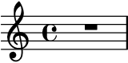
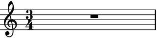
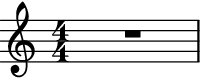
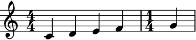
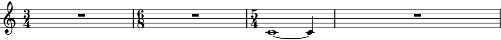
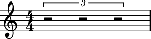
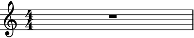
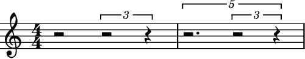
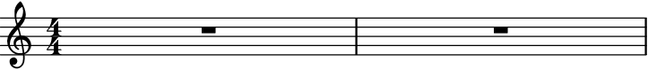

auxjad.rests_to_multimeasure_rest¶
-
auxjad.rests_to_multimeasure_rest(container: abjad.core.Container.Container)¶ Mutates an input container (of type
abjad.Containeror child class) in place and has no return value; this function looks for measures filled with regular rests and converts them into anabjad.MultimeasureRest.- Basic usage:
Converts any measure filled with regular rests into a measure with a single multi-measure rest.
>>> container = abjad.Container(r"r1") >>> auxjad.rests_to_multimeasure_rest(container) >>> abjad.f(container) { R1 }
- Multiple rests:
Works with measures with multiple regular rests.
>>> container = abjad.Container(r"r2 r8.. r32 r16 r8 r16") >>> abjad.f(container) { r2 r8.. r32 r16 r8 r16 }
>>> auxjad.rests_to_multimeasure_rest(container) >>> abjad.f(container) { R1 }

Note
Notice that the time signatures in the output are commented out with
%%%. This is because Abjad only applies time signatures to containers that belong to aabjad.Staff. The present function works with eitherabjad.Containerandabjad.Staff.>>> container = abjad.Container(r"\time 3/4 r4 r4 r4") >>> auxjad.rests_to_multimeasure_rest(container) >>> abjad.f(container) { %%% \time 3/4 %%% R1 * 3/4 }

>>> staff = abjad.Staff([container]) >>> abjad.f(container) { \time 3/4 R1 * 3/4 }
- Time signature changes:
Works with containers with multiple time signatures as well as notes.
>>> container = abjad.Staff(r"\time 3/4 r2. | " ... "\time 6/8 r2. | " ... "\time 5/4 c'1 ~ c'4 | r1 r4" ... ) >>> auxjad.rests_to_multimeasure_rest(container) >>> abjad.f(container) \new Staff { \time 3/4 R1 * 3/4 \time 6/8 R1 * 3/4 \time 5/4 c'1 ~ c'4 R1 * 5/4 }
- Tuplets:
Works with containers with tuplets.
>>> container = abjad.Container(r"\times 2/3 {r2 r2 r2}") >>> abjad.f(container) { \times 2/3 { r2 r2 r2 } }
>>> auxjad.rests_to_multimeasure_rest(container) >>> abjad.f(container) { R1 }
It also works with containers with tuplets within tuplets.
>>> container = abjad.Container( ... r"r2 \times 2/3 {r2 r4} \times 4/5 {r2. \times 2/3 {r2 r4}}") >>> abjad.f(container) { r2 \times 2/3 { r2 r4 } \times 4/5 { r2. \times 2/3 { r2 r4 } } }
>>> auxjad.rests_to_multimeasure_rest(container) >>> abjad.f(container) { R1 R1 }

Warning
The input container must be a contiguous logical voice. When dealing with a container with multiple subcontainers (e.g. a score containings multiple staves), the best approach is to cycle through these subcontainers, applying this function to them individually.